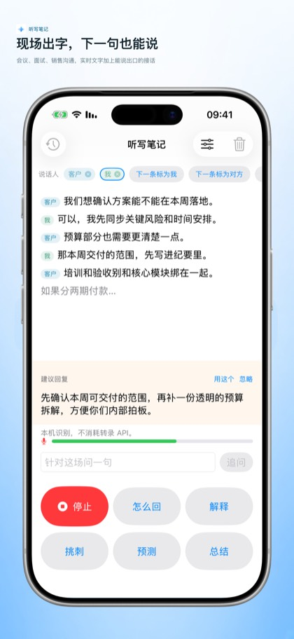
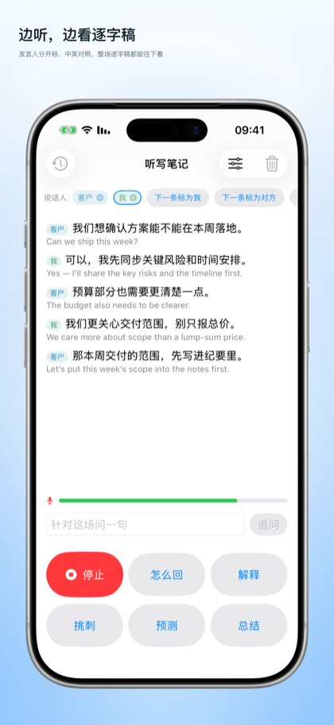
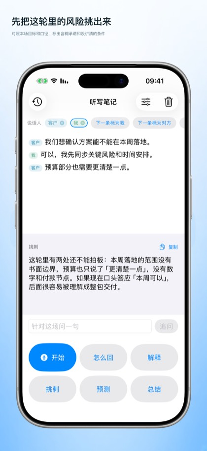

你人在现场的会
一边说话，一边看逐字稿。会后历史和录音默认留在这台设备上。
把你参加的会议写成现场文字，再给你一句能说出口的接话。本机听写免费。云端和 AI 用你自己的 Key。应用已在 App Store 上架。
安装免费。iPhone 与 Mac。云端和 AI 的解锁是一次性买断，不是订阅。
听写笔记是给你自己用的会议记录和说话提示。你还在房间里时，对面的话会写成字，并可以要一句能说出口的下一句。语音和 AI 的 Key 由你自己提供。我们不运营后端，也不随包发放开发者密钥。
它不是暗中录音工具，也不是我们提供的云端 AI 额度。请只在合法并获得必要同意时使用。听写只在前台进行，离开应用会停止麦克风。
一边说话，一边看逐字稿。会后历史和录音默认留在这台设备上。
为本场设定目标、背景和说话风格，再要一句接话、一份纪要、挑刺或简短预判。
简体中文、繁体中文、英语、日语、韩语、西班牙语、法语、德语、巴西葡萄牙语、俄语、阿拉伯语、印地语、印尼语。
开始听写不必先买，也不必先填转录 Key。密钥只写在你的设备上。音频和文字只在你点云端或 AI 时，才发给你自己选的服务商。
应用不携带开发者 API Key，也不转发请求。你用哪家，账单就在哪家。也可以接自己的兼容对话补全接口。
先听，再问，最后把记录留在本机。云端和 AI 的次数加在一起算试用。
应用本体免费。买断是非消耗型一次性内购，家庭共享可用。同一 Apple ID 可在 iPhone 与 Mac 恢复。



不用。允许麦克风和语音识别后，本机听写就可以用。只有云端转录和 AI 接话才需要你自己的 Key。
不是。本机听写一直免费。云端转录、可选当场翻译和 AI 接话一共试用 20 次，之后在 App Store 一次性买断。家庭共享可用。
默认只留在你的设备上。只有你使用云端或 AI 时，应用才会把音频、文字或提示词直接发给你配置的服务商。我们没有服务器接收这些内容。
iPhone（iOS 17 或更高）与 Mac。界面有 13 种语言。同一 Apple ID 可恢复买断。